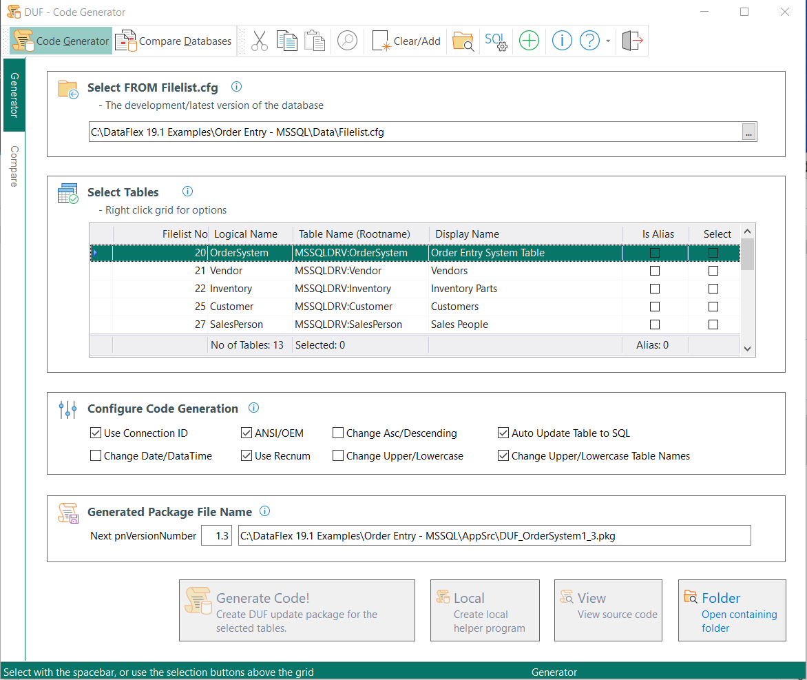

DUF Code Generator
See Also: Overview of the DataFlex Database Update Framework

The Code Generator is intended to be used after the initial first inclution of the framework. So if your program was using e.g. the DataFlex embedded database, you first need to create a cDbUpdateVersion object where tables are converted to SQL. For the next database revision you can use the Code Generator to make the customer database identical to the current development database.
The Database Update Framework (DUF) Code Generator program is a tool that can create a snap-shot of the development database by generating database update code (DUF) to an cDbUpdteVersion object package (*.pkg file). This generated file should be compiled into your main program with a "Use" statement inside the cDbUpdateHandler object, as the last line. When run at customer site the logic will check if an update of the customer's database is needed and then automatically make necessary database changes.
Imortant: See also How the automatic update works for an explanation on how the inner logic works for auto-generated packages, and potential pitfalls.
As an option it can compare two databases and create a report with differences. See also: "How to use the tool - Compare Databases" below.
Note that you must have used the "DUF SQL Connections" tool to specify the SQL login details properly before any Filelist.cfg with SQL tables can be used/opened properly.
How to use the tool - Code Generator
Select FROM Filelist.cfg
Press F4 or click the [...] button on the end of the form, to select a Filelist.cfg from your development Data folder. The "Select Tables" grid will automatically be filled with all tables read from the selected Filelist.cfg.
Select Tables
Right-click the grid and select "Select All" to select all tables from the Filelist.cfg. This is the recommended procedure, and it will generate DUF code for all tables. However, there might be occations where it is not suitable to select all tables and thus you are in control on what to select.
Configure Code Generation
It is recommended to leave all flags in the "Configure Code Generation" as they are.
Configure Generated File Name
The next pnVersionNumber was read from the DbVersion table when the Filelist.cfg was selected. The DbVersion table was/should have been created by the Database Update Framework the first time it was added to your program and it was compiled & run for the first time. The value was incremented to the next decimal value (+ .1). This version number is used to create the suggested file name for the DUF code to be created.
Click the "Generate Code!" button and the file will get created for you. All you have to do now is to include the package into your main program.
NOTE: After testing the newly created file, you might want to remark the line "UseDUF_MultipleTablesXXX.pkg" until release date to avoid including the file each time the program is compiled as the compile otherwise will take considerably more time.
Example;
Object oDbUpdateHandler is a cDbUpdateHandler
Set piDbVersionFileNumber to 38
Set piDbVersionFieldNumber to 1
Set pbAutoCreateDbVersionTable to True
Set pbCheckDataFlexUserCount to False
Set psCollation to "Latin1_General_CS_AS"
Procedure OnPreUpdate
Boolean bOK
String sDatabase sDriverID sCollation
Set DF_DATABASE_DEFAULT_DEFAULT_DATE_DUF to CS_DUFLowestSQLDateValue
Set DF_DATABASE_DEFAULT_DEFAULT_DATETIME_DUF to CS_DUFLowestSQLDateValue
Get psDriverID to sDriverID
Move "MyDatabase" to sDatabase
Get SqlDatabaseCreate sDriverID sDatabase True True to bOK
If (bOK = False) Begin
Send Info_Box ("Something went wrong and the SQL database '" + sDatabase + "' could NOT be created.\n\n Is 'Microsoft SQL Server' installed properly, and is the SQLConnections.ini file pointing to 'master'?\n\nThe program will now exit.")
Send Exit_Application
End
Get psCollation to sCollation
If (sCollation <> "Latin1_General_CS_AS") Begin
Get SqlDatabaseCollationChange sDatabase 'Latin1_General_CS_AS' to bOK
End
End_Procedure
Object oDbUpdateVersion1_0 is a cDbUpdateVersion
Set pnVersionNumber to 1.0
Procedure OnUpdate
Boolean bOK
Send ApiTableConvertALLToSql
// These tables are _not_ automatically converted to SQL by the
// ApiTableConvertALLToSql message, so lets convert them now.
Get ApiTableConvertToSQL 38 to bOK
Get ApiTableConvertToSQL 253 to bOK
Get ApiTableConvertToSQL 254 to bOK
Get UtilMoveAllEmbeddedToBackupFolder to bOK
End_Procedure
End_Object
Use DUF_MultipleTables1_1.pkg
End_Object
Helper - Create local program button
This button can be used to create a local help program that includes the generated package file. It is only intented to be used internally in development. The purpose is to propagate database changes between developers that has their own copy of the development database. So if programmer A has added or changed a table/field/index/relation, that particular table can be selected from the "Select Tables" grid. Then the "Generate Code!" and "Helper Create local program" buttons. Programmer A can then provide that code to programmer B, that only needs to compile & run the program to automatically update his copy of the database with the changes made by programmer A.
Folder - Open containing folder
Opens Windows Exlorer and selects the newly created package file.
How to use the tool - Compare Databases
The routine can compare two databases that are present on the same machine or network. It can compare a DataFlex embedded database to an SQL version, or any combination of these. In short the format of the two databases to compare doesn't matter. The routine was written to test the "Code Generator" logic, so while being correct the presented compare result might be slightly wrong at times and can't fully be trusted.
Just select the two Filelist.cfg files for the development and "customer" copy and click the "Compare Databases!" button.
Note that you must have used the "DUF SQL Connections" tool to specify the SQL login details properly before any Filelist.cfg can be used properly.
Next Topic